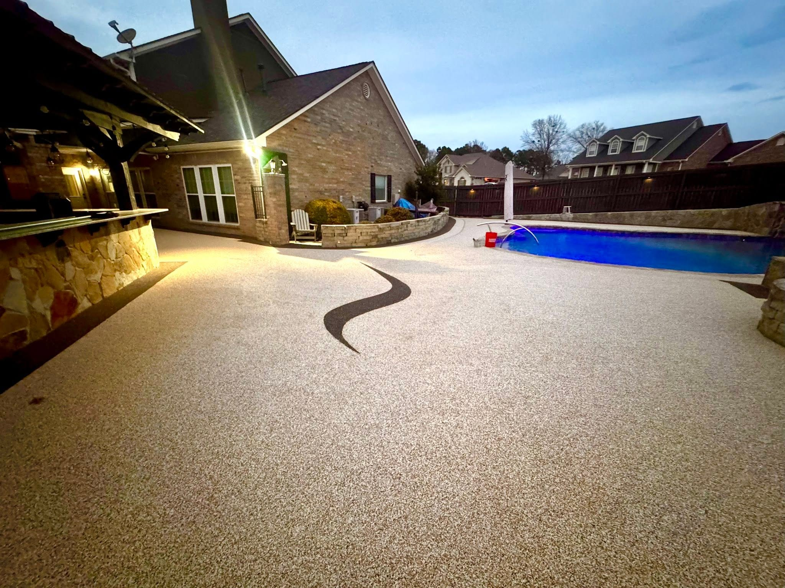
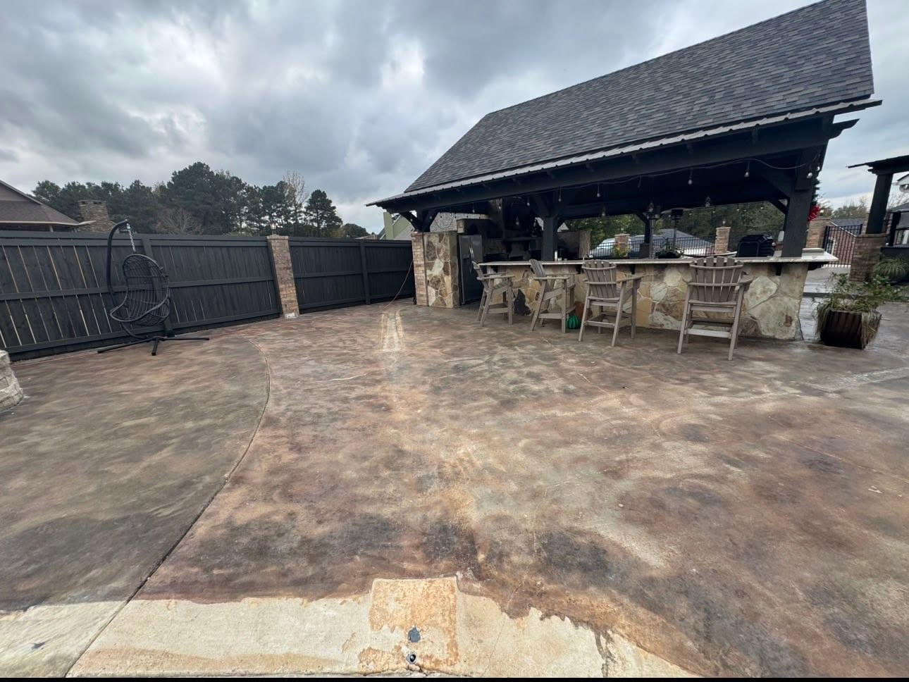
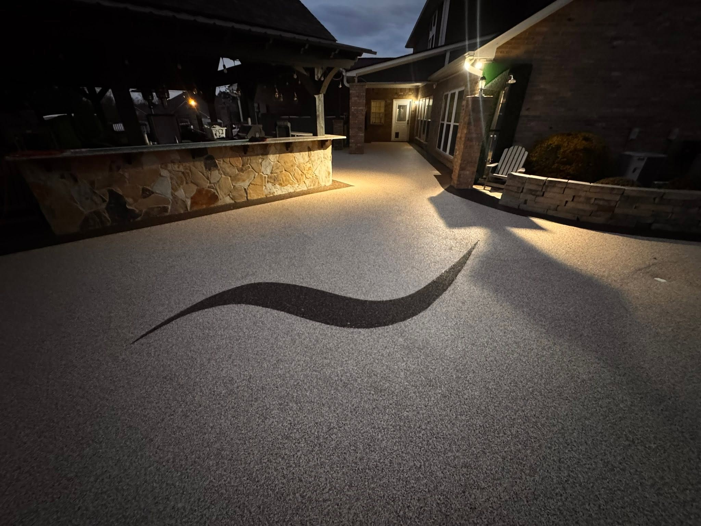
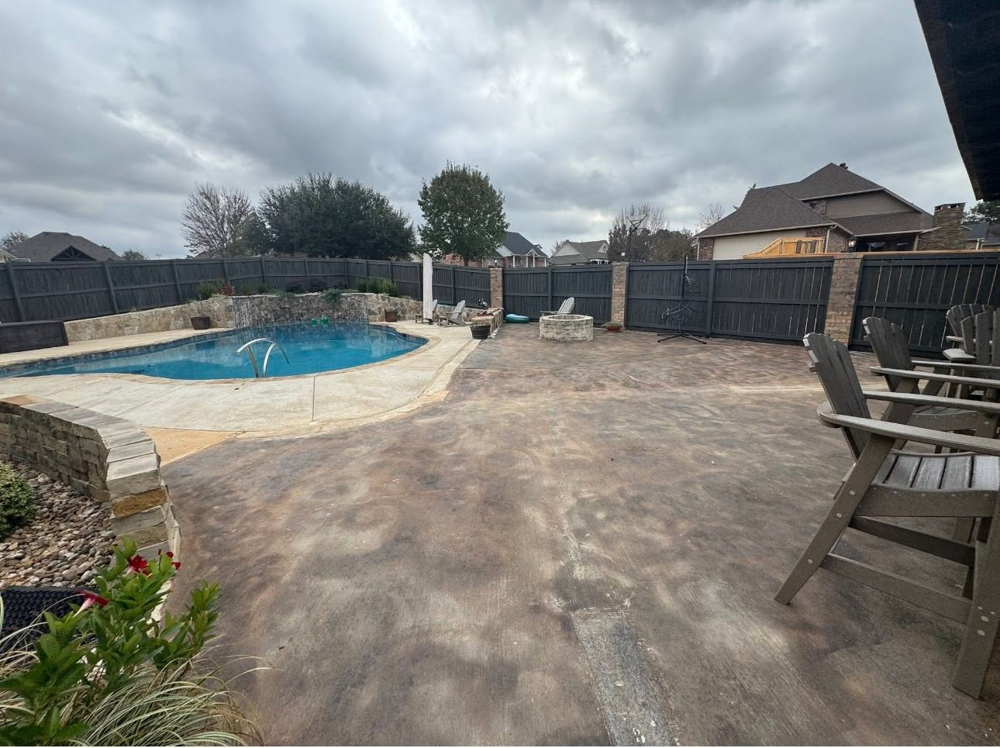

Hallsville project
Outdoor living surface built to look expensive after sunset.
A stained, weathered pool deck became a continuous rubber surface that reflects light beautifully, softens the patio, and turns the whole backyard into a finished entertaining space.

Before and after
From mottled concrete to a resort-lit pool deck.
Use the slider to compare the old stained surface with the finished rubber system. The evening photos show why the right texture matters: the surface reads clean, intentional, and premium under landscape lighting.


Before
After
Drag the project slider

Want this level of finish?